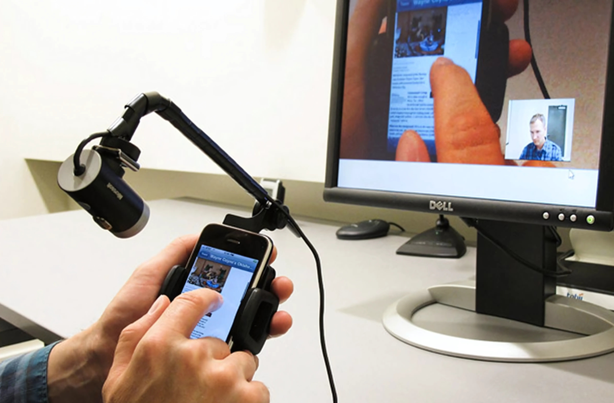

Usability Testing
Usability Testing adalah metode evaluasi yang dilakukan dengan mengamati langsung bagaimana pengguna berinteraksi dengan desain. Tujuannya adalah untuk mengetahui apakah desain sudah mudah digunakan, apakah ada bagian yang membingungkan, serta bagaimana pengguna menyelesaikan tugas-tugas tertentu. Metode ini membantu desainer memahami pengalaman nyata pengguna saat mencoba prototipe atau produk yang telah dibuat.
A/B Testing
A/B Testing adalah teknik evaluasi yang digunakan untuk membandingkan dua versi desain (versi A dan versi B) guna melihat mana yang lebih efektif atau disukai oleh pengguna. Pengujian ini biasanya dilakukan dengan membagi pengguna ke dalam dua kelompok dan menganalisis hasil interaksi mereka, misalnya perbedaan jumlah klik, waktu tinggal, atau tingkat keberhasilan dalam menyelesaikan tugas.

Heuristic Evaluation
Heuristic Evaluation adalah metode evaluasi yang dilakukan oleh ahli dengan menilai desain berdasarkan prinsip-prinsip dasar usability. Beberapa prinsip yang sering digunakan antara lain visibilitas sistem, konsistensi, kontrol pengguna, dan pencegahan kesalahan. Evaluasi ini tidak melibatkan pengguna secara langsung, namun sangat berguna untuk menemukan masalah-masalah desain di tahap awal.

Feedback Kualitatif
Feedback Kualitatif merupakan metode evaluasi yang mengandalkan masukan langsung dari pengguna melalui wawancara, observasi, atau angket terbuka. Metode ini membantu mengungkap opini, pengalaman, dan kesan subjektif pengguna terhadap desain yang telah dibuat. Feedback ini biasanya bersifat mendalam dan bisa menjadi dasar untuk perbaikan lebih lanjut.
Masih semangat?
Yuk, buka halaman berikutnya!